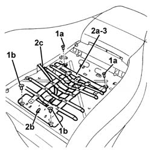
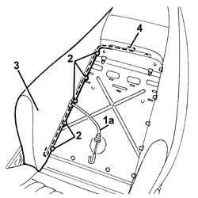
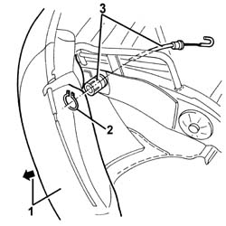

7045A39 device for driver`s seat squab lumbar adjustment - r r
- Path
- Procedures > 70 FITTINGS > 7045 FRONT SEATS > 7045A front seat assembly > 7045A39 device for driver`s seat squab lumbar adjustment - r r
- Kind
- repair procedure (removal / refitting; the operation number is the code)
- Applies to
- all engines; all production periods
- Interactive page
- https://sloeber94.github.io/elrnDB-a156/en/#/3238871
Applies to: all engines; all production periods
 Removing
Removing
 Refitting
RefittingCarry out op. 7045A10 l/h or r/h front seat (one) - r+r
Carry out op. 7045B10 l/h or r/h front seat head restraint - r+r
Carry out op. 7045A25 squab lumbar knob - r r
Carry out op. 7045A24 squab knob - r r
Carry out op. 7045A43
Carry out op. 7045A44 seat interior guard - r r
Carry out op. 7045A20 SQUAB COMPLETE with a front seat with air-bag, height adjustment and lumbar adjustment, left or right - R.R.
Carry out op. 7045A38
Applies to: all engines; all production periods
Refitting
RemovingComplete op. 7045A20 SQUAB COMPLETE with a front seat with air-bag, height adjustment and lumbar adjustment, left or right - R.R.
Complete op. 7045A44 seat interior guard - r r
Complete op. 7045A43
Complete op. 7045A24 squab knob - r r
Complete op. 7045A25 squab lumbar knob - r r
Complete op. 7045B10 l/h or r/h front seat head restraint - r+r
Complete op. 7045A10 l/h or r/h front seat (one) - r+r
Test the device is working properly.
Applies to: engines: 3.2 V6; all production periods; only with equipment: GTA
Removing
Refitting7045A10 l/h or r/h front seat (one) - r+r
7045A44 seat interior guard - r r
7045A19 BACKREST - CENTRE SECTION - front seat (one, left or right - R.R .
7045A25 squab lumbar knob - r r
1. Using a drill fitted with a travel regulator, remove the rivets (1a) and (1b) fixing the lumbar adjustment device.
2. Move the lumbar adjustment device (2a) slightly and disconnect the end (2b) of the adjustment cable (2c).
3. Remove the backrest lumbar adjustment device.

Applies to: engines: 3.2 V6; all production periods; only with equipment: GTA
1. If necessary, remove the adjustment cable (1a) with the attachment for the knob, following the instructions given below.
2. Lift up the retaining tabs on the right side of the cover slightly.
3. Disconnect the cover on the right side and move it.
4. Release the metal rod on the right side.

Applies to: engines: 3.2 V6; all production periods; only with equipment: GTA
1. Move the cover and the upholster slightly in the area of the lumbar adjustment knob.
2. Release the knob attachment circlip.
3. Remove the knob attachment cable.

Applies to: engines: 3.2 V6; all production periods; only with equipment: GTA
Refitting
RemovingCheck that the lumbar adjustment device is not damaged.
If removed, place the knob attachment cable in position.
Fit the circlip on the knob attachment, then reposition the upholstery and the cover.
Fit the metal rod in position on the right side of the backrest.
Connect the cover for the right side and fold the retaining tabs slightly.
Connect the end of the adjustment cable to the adjustment device.
Place the lumbar adjustment device in position and secure it using the rivets.
7045A25 squab lumbar knob - r r
7045A19 BACKREST - CENTRE SECTION - front seat (one, left or right - R.R .
Topics linked from this page (9)
- 7045A10 l/h or r/h front seat (one) - r+r
- 7045A19 BACKREST - CENTRE SECTION - front seat (one, left or right - R.R .
- 7045A20 SQUAB COMPLETE with a front seat with air-bag, height adjustment and lumbar adjustment, left or right - R.R.
- 7045A24 squab knob - r r
- 7045A25 squab lumbar knob - r r
- 7045a38 device for driver`s seat squab lumbar adjustment - r r with seat removed
- 7045a43 seat exterior guard - r r
- 7045A44 seat interior guard - r r
- 7045B10 l/h or r/h front seat head restraint - r+r